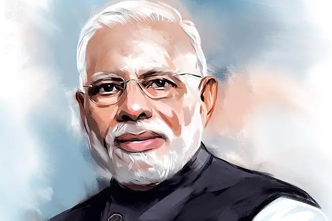

Narendra Damodardas Modi is an Indian Politician serving as the 14th and current Prime Minister of India. Modi was the Chief Minister of Gujrat from 2001 to 2014 and he is the Member of Parliament from Varanasi. He is a member of the BJP and RSS. He is the first Prime minister to have been born after India's independence and the longest serving Prime minister from outside the Indian National Congress.
Modi was appointed Chief Minister of Gujarat in 2001 due to Keshubhai Patel 's failing Health and Poor public image following the earthquake in Bhuj.
Modi's administration has tried to raise foreign direct investment in the Indian economy and reduced spending on Healthcare and Social welfare Programmes. Modi has centralised power by abolishing the Planning Commission. He began a High-profile Sanitation Campaign, controversially initiated a demonetisation of high-denomination banknotes and a transformation of the Taxation regime, and abolished Environmental and Labour Laws. Under Modi, the state government spent less than the National average on education and healthcare according to Human Development Index. He oversaw the country's response to the COVID-19 pandemic, during which the World Health Organization estimated that 4.7 million Indians died.
Modi has received consistently high approval ratings during his tenure. He had published a Gujrati book titled Jyotipunj, containing various profiles of RSS leaders.
Under Modi's tenure, India has experienced Democratic backsliding. His administration revoked the Special status of Jammu & Kashmir, introduced the Citizenship Amendment Act (CAA) and Three Farm Laws, which prompted widespread protests across the country.
Modi remains a figure of controversy domestically and internationally over his handling of the 2002 Gujrat riots, cited as evidence of an exclusionary Social agenda
read more.
